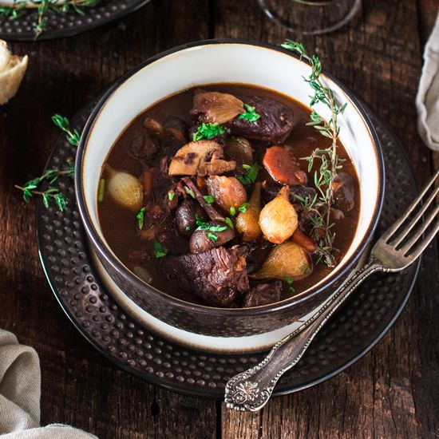

Ingredients
Marinade
- 3 cups Burgundy wine
- 2 onions, thinly sliced
- 2 carrots, chopped
- 2 tbsp brandy
- 1 clove garlic, crushed
- 10 whole black peppercorns
- 1 tsp salt
- 1 sprig fresh parsley
- 1 bay leaf
- 2 lbs cubed beef chuck roast
Bourguignon
- 4 tbsp olive oil, divided
- ¼ lb bacon, cubed
- 2 onions, chopped
- 3 tbsp all-purpose flour
- 2 cloves garlic, crushed
- 1 tbsp tomato paste
- 1 (10.5 oz) can beef broth
- Salt and pepper to taste
- 4 tbsp butter
- 1 lb fresh mushrooms, sliced
Instructions
- For the marinade, mix wine, sliced onions, carrots, brandy, garlic, peppercorns, salt, parsley, and bay leaf in a large bowl
- Add beef and toss to evenly coat; cover the bowl with plastic wrap and marinate in the refrigerator for 2 days
- For the bourguignon, preheat oven to 150C
- Strain beef from the marinade and shake off excess; pat dry with paper towels
- Strain vegetables and set aside; reserve marinade
- Heat 2 tbsp of oil in a large skillet over medium-high heat
- Add beef in batches; cook until browned on all sides
- Transfer browned beef into a separate medium bowl; set aside
- Add bacon to the same skillet; cook and stir until lightly browned
- Transfer bacon to the bowl with browned beef
- Drain skillet and return it to the heat
- Pour 1 cup of reserved marinade into the skillet; bring to a boil while scraping browned bits of food off the bottom of the pan with a wooden spoon
- Return this liquid to the reserved marinade
- Heat remaining 2 tbsp oil in the same skillet
- Add chopped onions; cook and stir until just tender (~2-3 minutes)
- Stir in reserved onions and carrots from the marinade; mix well
- Use a slotted spoon to transfer vegetables into the bowl with beef
- Return the skillet to the heat; stir flour in pan drippings until browned (~1-2 minutes)
- Stir in garlic and tomato paste until combined
- Add beef broth, remaining reserved marinade, salt, and pepper
- Bring to a boil, whisking to remove any flour lumps; pour over beef mixture in the bowl
- Transfer beef mixture into a casserole or baking dish
- Cook in preheated oven until beef is tender (~3 hours)
- Stir occasionally and add water if needed
- About 10 minutes before serving, melt butter in a skillet over medium-high heat
- Add mushrooms and sauté until lightly browned (~5-7 minutes)
- Stir mushrooms into beef mixture until well combined